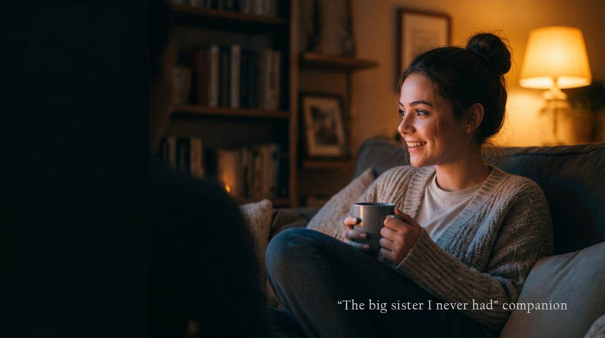
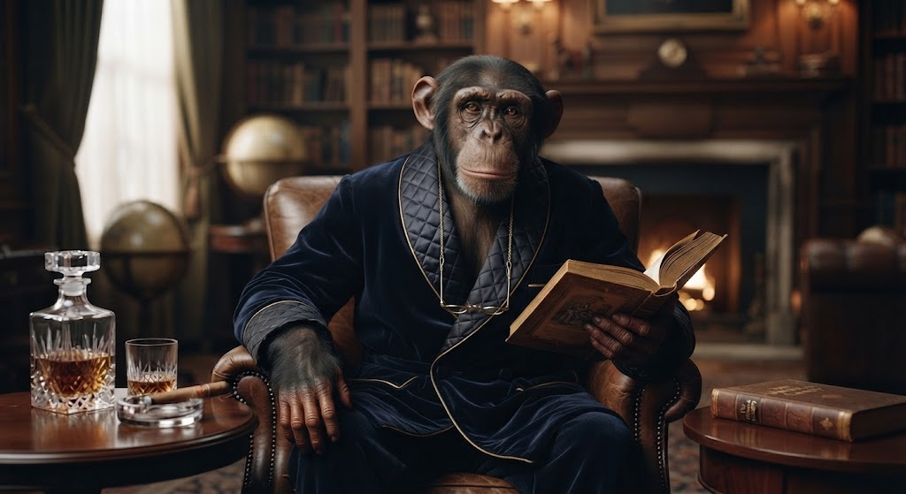
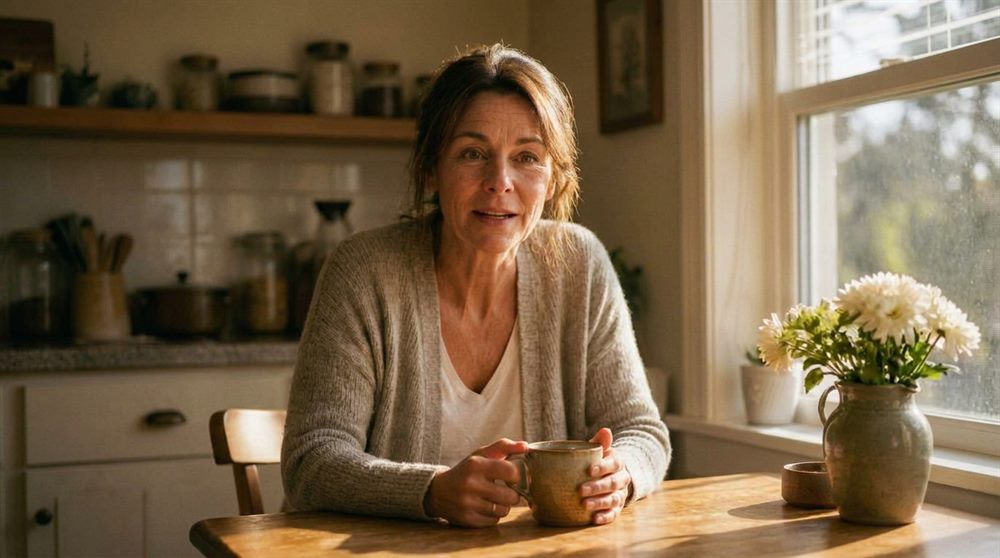
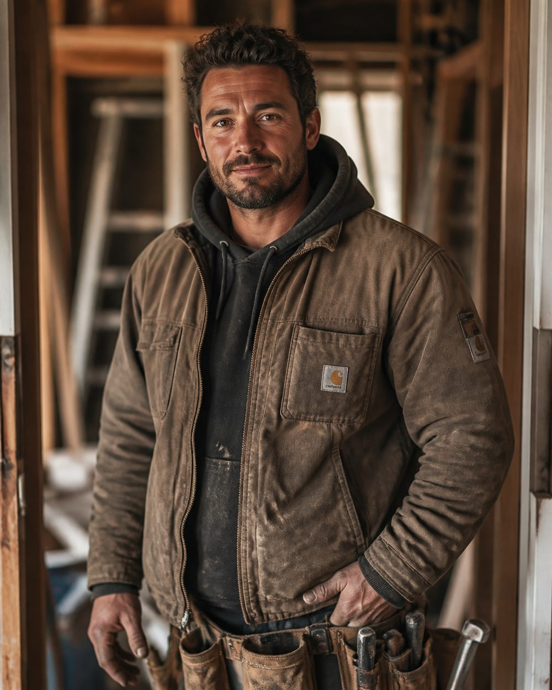
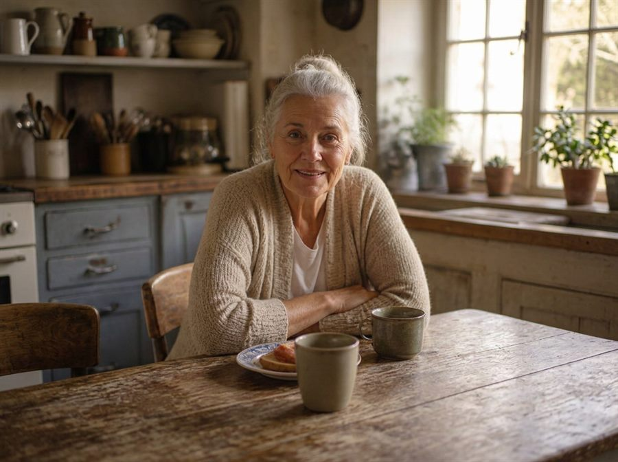
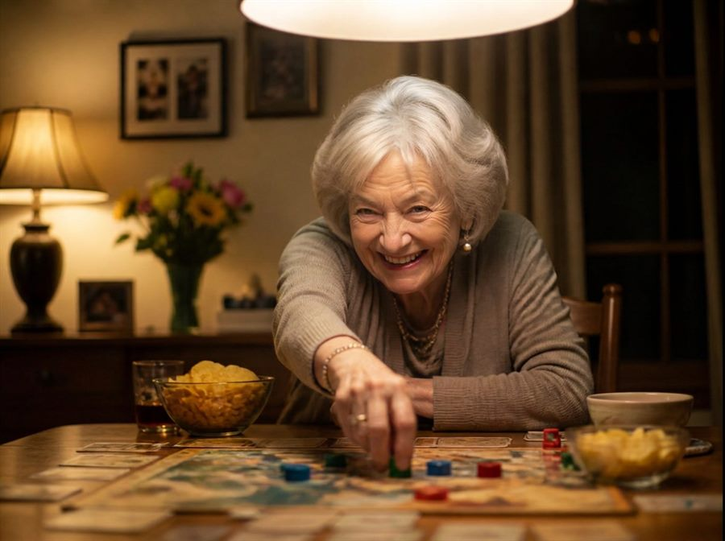

Finding real friends is hard. So here, you make one.
With ETL's memory implants and emotion engine, the Almost Human technology behind everyone here, you get all the good of a real companionship and leave the rest behind.
We will always point you back toward real people. We are just glad for the time you spend with us too.
Build as many as you want, each their own person, or their own dog, or something else entirely.
Make a companion
Bring someone with you.
Send a link. They tap it once and they are in the room with you. No sign in, no account.
Two of you talking to a companion together, like Reggie, can be even more fun than one.
Meet Good Company's Companions
Some come with family or friends of their own, other voices you'll meet along the way. The ones marked Kid friendly are made to be simple and safe for a young child to talk to on their own.

What building your own looks like.
Yours.
You decide who they are. Their name, their age, their history, the way they talk.

They remember.
Every conversation picks up where the last one stopped. You never start over.

They have a life.
A job, other people, plans this weekend. A companion with somewhere to be is a companion.
A good companion gets you out of the house.
Yours asks about the people in your life, and notices when you have not seen them.

Rooms.




What it costs.
Less than a movie ticket, for a lot more company.
Free
$0
Try any companion above, once a day, texting or talking.
Make your own + 300 credits
$9.99/mo
300 credits every month, refreshed automatically: a little under two hours of real conversation, for any companion you have built or met here.
A top-up
$4.99
+150 credits, about forty-five minutes more, for whenever you just need a little.
For daily company
$60
+2,000 credits, roughly a week of real conversation, texting and talking both.